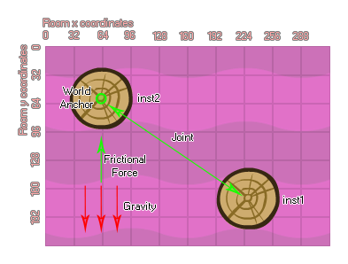

physics_joint_friction_create(inst1, inst2, anchor_x, anchor_y, max_force, max_torque, col)
| Argument | La description |
|---|---|
| inst1 | La première instance à se connecter avec l'articulation |
| inst2 | La deuxième instance pour se connecter avec l'articulation |
| anchor_x | La coordonnée x pour l'articulation, dans le monde du jeu |
| anchor_y | La coordonnée y pour l'articulation, dans le monde du jeu |
| max_force | La force de friction maximale qui sera appliquée |
| max_torque | La force de rotation maximale qui sera appliquée |
| col | Si les deux instances peuvent entrer en collision (vrai) ou non (faux) |
Renvoie: Index de l'articulation
Le joint de friction est un peu différent de tous les autres joints de la simulation physique en ce sens que la connexion créée ne contraint pas la position ou le mouvement des instances, mais plutôt sa vitesse et sa rotation. Cela fonctionne en prenant les valeurs d'entrée maximales pour la force et le couple et en les appliquant à la seconde fixation pour ramener la vitesse et le moment angulaire aux mêmes valeurs que celles de la première instance. Donc, si vous avez une instance stationnaire et une instance mobile, connectez-les avec un joint de friction, l'instance mobile ralentira progressivement jusqu'à ce qu'elle soit également stationnaire. Si les deux instances se déplaçaient alors la seconde instance aura sa vitesse de déplacement modifiée pour correspondre à celle de la première instance.

Comme avec la plupart des autres articulations, vous fournissez les instances à joindre ensemble, ainsi que la position de l'articulation à créer dans la pièce. Vous fournissez alors la force maximale et le couple maximum (frottement directionnel et rotationnel), et si vous définissez la valeur "col" sur true alors les deux instances peuvent interagir et entrer en collision les unes avec les autres, mais seulement si elles ont des événements de collision, mais si elle est définie sur false, ils ne vont pas entrer en collision, peu importe quoi.
var mainFixture, o_id;
mainFixture = physics_fixture_create();
physics_fixture_set_circle_shape(mainFixture,
sprite_get_width(sprite_index) / 2);
o_id = instance_create_layer(x+300, y, "Instances",
obj_Rudder);
physics_fixture_bind(mainFixture, id);
physics_fixture_bind(mainFixture, o_id);
physics_joint_friction_create(id, o_id, x, y, 10, 0.3, true);
physics_fixture_delete(mainFixture);
Le code ci-dessus va créer un fixture puis le lier à deux instances, avant de les relier toutes les deux en utilisant un joint de friction.